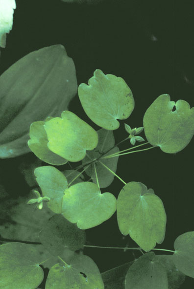
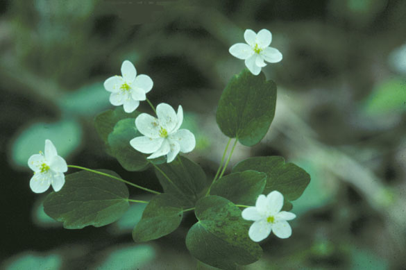
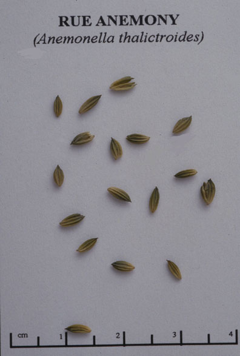

Anemonella Thalictroides
Thalictrum thalictroides
Family: Ranunculaceae
Rue Anemone
Swink/Wilhelm #7


FLOWERING: April to Mid-June
SEED TIMING: June
HABITAT: Rich woodlands
DIAGNOSTIC FEATURES: Grows 4 to 9 inches high. Soft green stem. Compound leaves with 3 rounded, notched leaflets arranged in elevated whorls around single, central flowering stalks. Basal leaves also look more notched than lobed. This species is similar to the False Rue Anemone (Isopyrum biternatum), but differs by having 3 whorled leaves just below the flower.
TO PICK: Cluster of small, green seeds (achenes) at end of branched stalks come off easily when rubbed between fingers. The fruit of A. thalictroides can be distinguished from that of Isopyrum biternatum which bears a small follicle (pod containing several seeds) rather than an achene. Because A. thalictroides flowers over a period of time, both ripe and unripe seeds are likely to be found at the same time. Seed can be picked over several weeks.